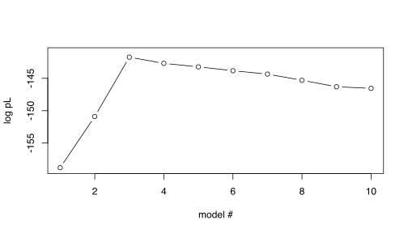
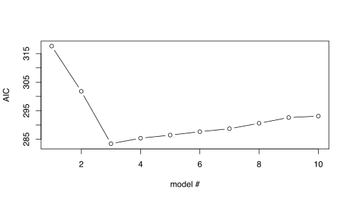
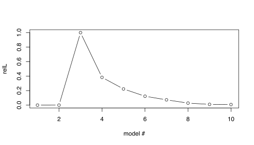
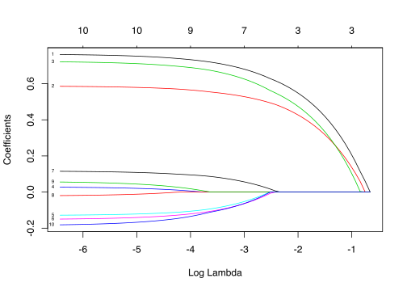
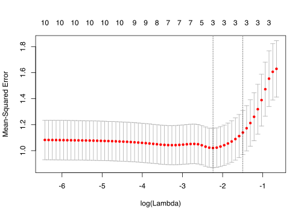

6 Regularization
Lecture notes
Regularization is a concept that adds auxiliary criteria, so-called regularization terms, to probabilistic models. This is called regularized likelihood models or penalized likelihood models. Typically, the regularization term is a function of parameters \(\beta\):
\[\log rL[\beta | X, Y] = \log Pr[Y | X, \beta] - f(\beta),\]
A very simple regularized likelihood model uses \(f(\beta) = \#\beta = \#X\), that is the number of \(X\) variables.
\[\log rL[{\beta} | X, Y] = \log Pr[Y | X, {\beta}] - \#X, \]
Applying this rL to our example data, solves the overfitting problem.
# compute loglikelihood (ll) for all models including 1-P variables
pl= vector()
for(i in seq(1,P)){
xi=X[,seq(1,i)]
xi=cbind(rep(1,N), xi)
fit = lm(Y~xi)
# To make the code simple, we forestall next step and use the AIC function here
# AIC= -2(pl) so convert back
pl[i] = -AIC(fit)/2
}
# plot ll of all models
plot(pl, xlim=c(1,P), ylim=c(floor(min(pl)),ceiling(max(pl))),ylab="log pL", xlab="model #", type = "b")
6.1 Regularization | Bayesian interpretation
Lecture notes
Regularization is a canonical example where Bayesian and frequentist statistics meet.
The standard way of writing a regularized likelihood is using the logLikelihood, but what if ‘de-log’ it:
\[\begin{eqnarray*} \log rL[\beta | X, Y] &=& \log Pr[Y | X, \beta] - f(\beta) \\ \Downarrow\\ rL[\beta | X, Y] &=& Pr[Y | X, \beta] * e^{- f(\beta)} \end{eqnarray*}\]
This looks suspiciously like an un-normalized posterior probability (i.e., lacking the denominator), with an exponential prior \(Pr[\beta]=e^{-f(\beta)}.\)
As we will see examples of, most regularization techniques have a Bayesian interpretation.
In fact, a standard solution overfitting and, more generally, over-parameterization, i.e., problems where the likelihood function may not have a unique maximmum, is to include prior information, either as Bayesian priors or regularization terms to limit the parameter space. This is an area where Bayesian and frequentist socialize and get on well.
6.2 Regularization | AIC and model testing
Lecture notes
Coming from a information theory base, Hirotugu Akaike (1974) came up with a very similar approach for solving the overfitting problem.
The Akaike information criterion (AIC), for a model \(m\) with variables \(X\), is defined as
\[AIC_m = 2\# X - 2\log \max L[{\beta}|X,Y]\]
We see that \(AIC_m = -2 \left(\log \max L[{\beta}|X,Y] - \#X\right)\), i.e., \(-2\) times the the simple \(\log rL\), we just looked at in our first regularization example.
In the information theory context, the difference in \(AIC\) between two models is claimed to estimate the information lost by selecting the worse model.
Sometimes, the relative likelihood for model \(m\) is used, which is \[relL = e^\frac{ AIC_{min} - AIC_{m} }{2}\] where \(AIC_{min}\) is the minimum AIC among a set of compared models
Extra Reading
\(relL\) can be interpreted as proportional to the probability that the model \(m\) minimizes the information loss.
- Notice that\[ relL = \frac{e^{\#X_m} }{e^{\#X_{min}}}\frac{\max L[{\beta}_{m}|X_m,Y]}{\max L[{\beta}_{min}|X_{min},Y]}\] we see that \(rL\) can be viewed as a weighted likelihood ratio or maybe more naturally as a Bayes factor
6.2.1 Task | AIC analysis
A typical AIC analyss strategy is to select the model, \(m\) with \(AIC_m=AIC_{min}\) and then evaluate how much better it is than the other candidate models, e.g., using the \(relL\).
- Apply this AIC strategy applied to our example data using the R funcion
AIC create a table with the AIC and the \(relL\) for the set of models comprising \(\{X_1, .\ldots, X_i\} \textrm{ for } i \in [1, \ldots, 10]\); indicate also if a model is the minimum AIC model.
require(stats)
require(dplyr) # used for nice table formatting
require(kableExtra) # used for nice table formatting
mprev <- lm(Y ~ X[,1]) # current miminimum AIC model
# dummyentry to be replaced
aic=data.frame(models=0, aic=0, isAICmin="-")
for(i in seq(2,P)){
m <- lm(Y ~ X[,seq(1,i)])
fit = AIC(mprev,m) # compare with current the minimum model
mprev = m
if(i==2){ #include also the first model
aic[i-1,] = list(paste0(i-1," variable"), signif(fit$AIC[1],5), "-")
}
aic[i,] = list(paste0(i," variables"), signif(fit$AIC[2],5), "-")
}
minaic=min(aic$aic)
aic$rl=format(exp((minaic-aic$aic)/2), digits=4)
aic$isAICmin = ifelse(aic$aic==minaic,"Yes","-")
kable(aic, format='html', row.names=F, col.names=c("Compared models","AIC","Minimum AIC","rL"),digits=30,format.args=list(snsmall=0)) %>% kable_styling( font_size = 14)Show result
| Compared models | AIC | Minimum AIC | rL |
|---|---|---|---|
| 1 variable | 317.61 |
|
3.841e-08 |
| 2 variables | 301.80 |
|
1.041e-04 |
| 3 variables | 283.46 | Yes | 1.000e+00 |
| 4 variables | 285.38 |
|
3.829e-01 |
| 5 variables | 286.46 |
|
2.231e-01 |
| 6 variables | 287.66 |
|
1.225e-01 |
| 7 variables | 288.70 |
|
7.280e-02 |
| 8 variables | 290.61 |
|
2.802e-02 |
| 9 variables | 292.61 |
|
1.031e-02 |
| 10 variables | 293.10 |
|
8.067e-03 |
- Try to plot the \(AIC\) and the \(reL\) with the different models on the \(X\)-axis
require(stats)
# plot AIC of all models
plot(aic$aic, xlim=c(1,P), ylim=c(floor(min(aic$aic)),ceiling(max(aic$aic))),ylab="AIC", xlab="model #", type = "b")
# plot relL of all models
plot(aic$rl, xlim=c(1,P), ylab="relL", xlab="model #", type = "b") Show result

6.2.1.1 Think about:
- Which is the best model? Is this correct compared to our oracle knowledge?
- How good is it compared to the others?
- Can you see a drawback in our model testing approach above? If so, how can we solve that?
Some possible answers
Some possible answers
- We see that the best model is the one with the 3 first X-variables (in line with our oracle knowledge) and that the second best model (with the first 4 X-variabels) is \(\approx 60\%\) as good.
Extra Reading
- Sometimes it is desirable to compute a significance for rejecting a model in favour of another model. A NULL distribution for the \(relL\) statistic is usally obtained through simulation, e.g., using parameteric bootstrapping.
- Now, I this case we happened to know that the first 3 variables was the right one, so the order we choose to include them was correct. However, in the general case, we do not know this. How solve this?
- Best subset method; involves testing all possible subsets, which is computationally time-consuming and sometimes unfeasible
- Lasso
6.3 Regularization | LASSO and Feature selection
Lecture notes
LASSO stands for Least absolute shrinkage and selection operator (“shrinkage” is another common term for regularization) and is a method for selecting variables to include in a multivariate model.
Classical LASSO builds on RSS of a linear regression model \(Y \sim X{\beta}\) with regularization
Extra Reading
Extensions to glms exists, but then using a regularized likelihood expression
The regularization term \(f(\beta) = \lambda\sum_{\beta_i\in\beta} |\beta_i-0|= \lambda\sum_{\beta_i\in\beta} |\beta_i|\)
The \(\lambda\) parameter sets a limit on the estimation of \(\beta\).
Lasso is traditionally described as RSS with an auxiliary criterion/constraint:
\[min_{{\beta}}\left\{RSS\right\} + \lambda\sum_{\beta_i\in\beta} |\beta_i|.\] Lasso can also be viewed as a un-normalized Bayesian posterior probability, with a LaPlacean prior on \(\beta\): \(\beta_j ∼ LaPlace(0, 1/\lambda)\)
Extra Reading
Often the regularization term is expressed in terms of the \(\ell_1-norm\), which can be viewed simply a short-hand notation, e.g., the \(\ell_1-norm\) of \(\beta\) is
\[ ||\beta||_1 = \sum_{\beta_i\in\beta} |\beta_i|\]
There is also a \(\ell_2-norm\): \[ ||\beta||_2 = \sqrt{\sum_{\beta_i\in{\beta}} \beta_i^2}\] which is used, e.g., in ridge regression. This correspond to a Normal prior for Baysians.
We note, BTW, that you might already have encountered an \(\ell_2-norm\): since \(RSS = ||Y-X\beta||_2^2\) is simply the square of the \(\ell_2\) norm of the residuals.
- You might also see the notation \[min_{{\beta}}\left\{RSS\right\} \textrm{ subject to } ||{\beta}||_1 <= t\] where \(t\) is related to \(\lambda\).
The optimal values of \(\beta\) for different values of \(\lambda\) are then estimated, using some algorithm (lars or coordinate descent). A convenient way to think about this is that at very high \(\lambda\) values, all \(\beta_s\) are 0; by sequentially lowering \(\lambda\) more and more \(\beta_i\) become non-zero, the most important variables \(i\) are included first.
Extra Reading
The Coordinate descent algorithm is used in the R package glmnet:
- Over a grid of \(\lambda\in [0, \infty]\), do
- Start with all \(\beta=0\)
- until convergence repeat for each \(\beta_i\)
- while keeping all other \(\beta\) fixed and \(\beta_i=0\), compute partial residuals
- estimate \(\beta_i\) by RSS on the partial residuals
- update $_i using the RSS estimate and \(\lambda\).
Extra Reading
Alternatives to LASSO, differing mainly in the auxiliary criterion
- Ridge regression which uses a \(\ell_2\) norm
- Elastic-net, which uses a mixed model combination of the \(\ell_1\) norm and the \(\ell_2\) norm.
6.3.1 Task | Lasso using the glmnet R-package
- Use function
glmnetto perform LASSO analysis on our example data; relevant arguments of the function include:- linear regression (
family='gaussian'= default) - LASSO (
alpha=1= default) - standardization
- The variables Y and X must be centered and standardized to ensure that all variables are given equal weight in the model selection.
- standardization of \(X\) to unit variance in
glmnetis obtained by setting the argumentstandardize=TRUEwhich is the default - the values of \(Y\) is always standardized (?) for
family=gaussian(LASSO) - and the coefficients are back-standardized before reported
- linear regression (
Extra Reading
Standardization in glmnet:
- \(x' = \frac{x-\bar{x}}{s/\sqrt{N}}\) where \(\frac{s}{\sqrt{N}}\) is the estimate of the standard deviation of \(x\) (and, incidently, can be written using the \(\ell_2-\)norm: \(\frac{s}{\sqrt{N}} = \frac{\sum_{x_i \in x} (x-\bar{x})^2}{\sqrt{N}} = \frac{||X-\bar{x}||_2}{\sqrt{N}}\)).
require(glmnet)
# run lasso (alpha=1) for linear model (family=gaussian)
fit = glmnet(X,Y, family="gaussian", alpha=1, standardize=T)- A graphical way to view the result is to
plotthe paths of \(\beta\) for increasing vaules of \(\lambda\).
plot(fit, xvar="lambda",label=T) Show result

6.3.1.1 Think about
- In which order are variables included (i.e., their \(\beta\) becomes non-zero)?
- In which direction is the effect
- Which lambda should we select?
- Given our oracle knowledge, where would an appropriate \(\lambda\) be?
- Can we use that?
Some possible answers
Some possible answers
- The order in the above plot appears to be \((1,2,3,7,6,5,10,9,4,8)\) (may vary depending on the simulation)
- \(\beta_i > 0, i\in \{1,2,3,4,7,9\}\), while \(\beta_i<0, i\in \{5,6,8,10\}\)
- Given oracle knowledge, the correct \(\lambda\) appears lie somewhere in the interval \([\approx \exp(-0.9), \approx\exp(-2.25)]\)
- In the typical analysis case, we never have oracle knowledge.
6.4 Cross-validation
Lecture notes
The LASSO model will be different depending on how we set \(\lambda\). A problem is to decide the optimal \(\lambda\) to use.
- \(\lambda\) too high: risk of missing relevant variables
- \(\lambda\) too low: risk of overfitting
glmnet addresses this using \(k\)-fold cross-validation – what is that?
6.4.1 Cross-validation | How to test for overfitting
Lecture notes
The ultimate way of testing an estimated model (with parameters) is to apply it to new data and evaluate how well it performs, e.g., by measuring the mean squared error, \(MSE\) (\(=RSS/N\)). Naturally, we want to minimize \(MSE\), i.e., the error of the model. In our LASSO application, this means that we want to select the \(\lambda\) that minimizes the \(MSE\)
In cross validation, this approach is emulated by partioning the data at hand into a training and a validation data set. The model parameters are estimated (‘trained’) on the the training data and the validated on the test data.
By chance, this may fail if the partitioning is ‘non-representative’. A solution is to repeat the cross-validation procedure with another partioning.
In \(k\)-fold cross validation, the original data is split into \(k\) sub-datasets \(\{D_1,D_2,\ldots, D_k\}\). For \(i \in \{1,2,\ldots, k\}\), set \(D_i\) as the test data set and the union of the other datasets be the training data. Perform cross validation as above.
This gives a distribution of \(MSE\) from which we can estimate, e.g., mean and standard deviation.
Additional reading
This distribution allows us to use more elaborate means to select \(\lambda\). One common suggestion is to use the largest \(\lambda\) whose \(MSE\) is within 1 standard error from the minimum value (called lambda.1se in glmnet). The motivation argued for this choice is parsimony, in the sense that larger \(\lambda\) will include fewer variables (hence it is parsimonious in terms of number of included variables).
Here we will limit ourselves to finding the minimum \(\lambda\), called lambda.min in glmnet, but anyone is free to test if lambda.1se gives a different result.
6.4.2 Task | Determine optimal LASSO\(\lambda\)using cross-validation
- Use the function
cv.glmnetto perform cross validation (same options as forglmnet) plotthe cross-validation results- Compare with the plot of estimated \(\beta_i\) under different \(\lambda\).
- Determine the optimal \(\lambda\) (the one with minimal error)
require(glmnet)
par(mfrow=c(1,1))
# run lasso (alpha=1) for linear model (family=gaussian)
cvglm=cv.glmnet(X,Y, family="gaussian", alpha=1, standardize=T, nfolds=100)
plot(cvglm)
plot(cvglm$glmnet.fit, xvar="lambda",label=T)
minlambda=cvglm$lambda.min Show result

6.4.2.1 Think about
- Which is the \(\lambda\) selected by
cv.glmnet? - Does this make sense given our oracle knowledge?
Some possible answers
Some possible answers
- Cross-validation-selected optimal \(\lambda\) is 0.1064891 (\(log \lambda=\)-2.2397124)
- Yes, this includes only the oracle knowledge correct variables \(X_1, X_2, X_3\)
6.4.3 Task| Final LASSO effect sizes
- Finally print a table with the \(\beta\) coefficients (including the intercept, \(\beta_0\)) for the optimal model (i.e., at minimum \(\lambda\)). (Use function
coef).
# Actually the following suffice for output on console
#coef(cvglm, s="lambda.min")
# But to get a nice table:
require(dplyr) # for nice table
require(kableExtra) #for nice table
coefglm=as.data.frame(as.matrix(coef(cvglm, s="lambda.min")))
coefglm=cbind(seq(0,10),c(b0, b, rep(0, 7)),coefglm)
names(coefglm)=c("beta","value (oracle)", paste0("estimate(lambda=",signif(minlambda,3),")"))
kable(coefglm, row.names=F) %>% kable_styling( font_size = 14) Show result
| beta | value (oracle) | estimate(lambda=0.106) |
|---|---|---|
| 0 | 3.0000000 | 3.6046135 |
| 1 | 0.8125118 | 0.5905522 |
| 2 | 0.6009469 | 0.4631531 |
| 3 | 0.7232911 | 0.5204561 |
| 4 | 0.0000000 | 0.0000000 |
| 5 | 0.0000000 | 0.0000000 |
| 6 | 0.0000000 | 0.0000000 |
| 7 | 0.0000000 | 0.0000000 |
| 8 | 0.0000000 | 0.0000000 |
| 9 | 0.0000000 | 0.0000000 |
| 10 | 0.0000000 | 0.0000000 |
6.4.3.1 Think about
- Does the effect sizes make sense – if not can you think of why?
Some possible answers
Some possible answers
- Well…yes… sort of!
- \(\beta_i\) is non-zero only for oracle-known variables \(X_1, X_2, X_3\)
- however,they don’t exactly equate our oracle knowledge parameter values – they appear to be scaled.
- but their relative order of amplitude is right.
- Perhaps the normalization affected scaling.